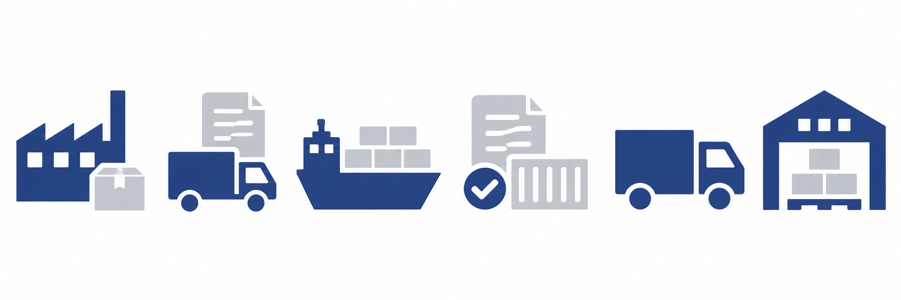
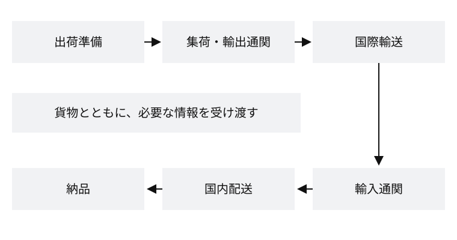
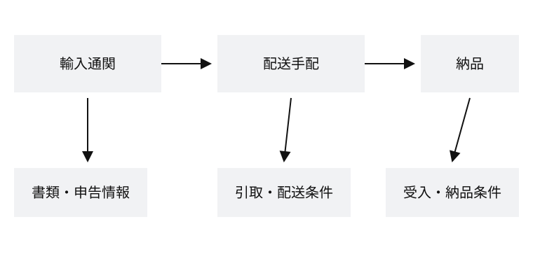

国際物流の全体像をつかむ
国際海上輸送は、出荷から納品まで複数の担当者がつないで進めます。

出荷準備
集荷・輸出通関
国際輸送
輸入通関
国内配送
納品
国境を越える輸送は、複数の工程の連携で成り立ちます。
貨物の移動だけでなく、必要な情報が次の担当者へ届くことも重要です。
BUSINESS SLIDES · VISUAL DEMO
1
工程と情報の受け渡しを整理する
工程間では、貨物の所在と必要な情報を合わせて確認します。

受け渡しで確認すること
BUSINESS SLIDES · VISUAL DEMO
2
全体の中から、注目する範囲を詳しく見る
輸入通関から納品まで、後工程に必要な条件を引き継ぎます。
出荷準備
集荷・輸出通関
国際輸送
輸入通関
国内配送
納品

後工程を見据えた情報整理
BUSINESS SLIDES · VISUAL DEMO
3